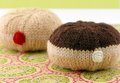

|
||
May 12, 2010 - Posted by Grace SchneblyHoley Doughnuts!Project Specs I think my niece's pantry is now stocked to the brim and all of this play found should keep her entertained until Christmas... at least I hope! You might think that I'd be sick of knitting food, but I'm actually going to miss knitting all of these different sweets. They barely take any time to knit so you can have a huge collection in just a few days. They're super fun to customize and it's easy to gather inspiration from all the variations you find in real life. I also think they're a lot of fun to photograph. The only downside is that you end up with a serious craving! It was fun picking the colors from my stash and each donut really flew off the needles. The pattern is worked in the round on double pointed needles and each donut has a seam at the outer edge that goes around the circumference. I thought it was actually a welcome change of pace and I couldn't believe I actually looked forward to seaming something. :) I just did a normal horizontal seam but I've seen people whip stitch the edges together and it looks really cute. At first I was planning on sewing beads on the pink and white frosted donuts for sprinkles, but I didn't realize how hard it would be to find spacer beads around here! I finally found some then decided against putting them on since there is a new baby in the household. I wanted my niece to be able to share these with her little sister with out her mom having to worry about a bead coming loose. I was inspired by the jelly donut at i like lemons and decided to create my own seamless filled donut mod. My husband also insisted I knit a Boston cream since that's his favorite. I love how these filled donuts turned out. They're a bit squishier and slightly smaller than the others. If you want your jelly or cream filled donuts to match the others, you should add an extra increase (and matching decrease) round. Here's what I did... Jelly or Cream Filled Donuts CO 5 sts I ended up with a half dozen donuts and I think the selection is pretty good. The only thing missing is a maple bar! |
   Recent ReviewsRecent Posts
 Our Favorites
|
|
| © 2007 KathrynIvy.com | ||


{kind=link}
{kind=link}